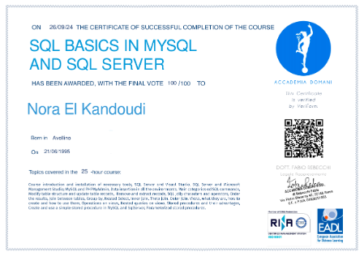

Certificazioni
- Certificato Python
- Certificazione Sql - MySql 
- Certificazione Corso Data Analytics

Hey ! Sono Nora El Kandoudi
Sono una laureanda in Ingegneria Informatica e dell’Automazione con una forte passione per lo sviluppo di soluzioni innovative nel campo dell'informatica e dell'automazione. Ho competenze in diversi linguaggi di programmazione tra cui C,Python,Html,Css,Js,Java ... Possiedo esperienza nello sviluppo di tecnologie con strumenti come MATLAB,Sql,e PLC. Sono abile nell'utilizzo di software di sviluppo come CAD,Visual Studio Code,Eclipse,Unity. Durante il mio percorso accademico, ho lavorato su vari progetti, tra cui la creazione di convertitori di valute,e-commerce ed altre tipologie di siti, che mi hanno permesso di applicare le mie conoscenze teoriche a situazioni pratiche e reali. Questi progetti hanno affinato le mie capacità di problem solving, gestione del tempo e lavoro di squadra (disponibili nel mio profilo github) Sono motivata e desiderosa di mettermi in gioco nel mondo dell’informatica, con l’obiettivo di approfondire continuamente le mie competenze e scoprire nuove possibilità di crescita e innovazione. Il mio obiettivo di carriera è diventare una professionista esperta nel settore dello sviluppo software e dei sistemi di automazione, contribuendo con creatività e competenza al successo dei progetti a cui parteciperò.